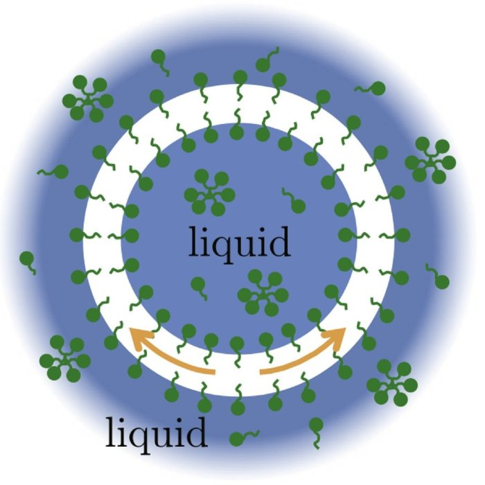
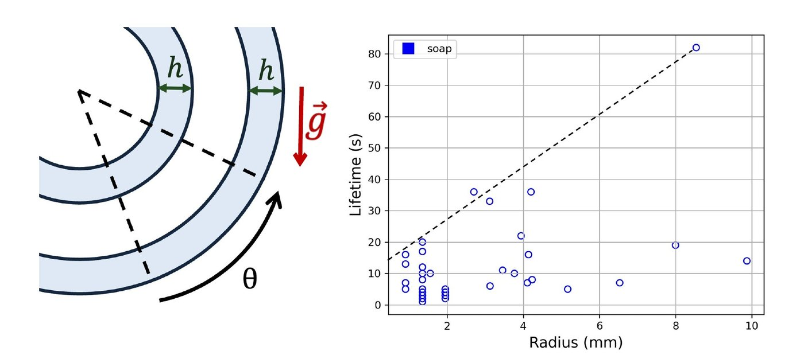
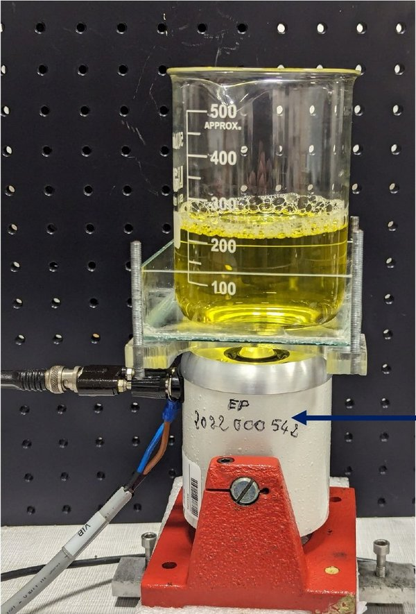

The questionDrop regular water very slowly into water whose surface tension has been lowered with soap. The drop can end up wrapped in a thin shell of air. Explain how this antibubble forms, make it as large and as long-lived as possible, and find out whether its size and lifetime are related.
A soap bubble is a thin film of liquid with air on both sides. An antibubble is the reverse. It is a ball of liquid wrapped in a thin shell of air, floating inside the same liquid.
Soap molecules line both faces of the air shell. The shell is very thin, about a thousandth of the antibubble's radius.

Liquid inside, a shell of air (white), liquid outside. The green shapes are soap molecules.
Two real antibubbles. The dark ring is the air shell. The larger one bursts at the end.
The bath is soapy water. The problem asks for drops of regular water, but those were difficult to turn into antibubbles, so we used soapy drops as well. A syringe pusher forms the drops at the end of a tube, and a lifting support sets the height they fall from.
Filmed in slow motion, the drop pushes a pocket of air down into the surface. The pocket then pinches shut above the drop and traps a layer of air around it.
The height has to be just right. Dropped from too low, the drop has too little energy to create the new air–liquid surface, and it stays on top as a small bead. Dropped from too high, the air film drains away before it is pulled under, and the drop collapses. In our tests, antibubbles formed only when the Weber number (the drop's kinetic energy divided by the surface energy it must create) was between 1.4 and 1.8.
A drop only works if it is past a certain size, and the size of the drop limits the size of the antibubble. To go bigger, we poured a column of liquid into the bath instead. The column pinches off and closes into an antibubble, with no limit set by drop size.
This method is hard to reproduce, but it gives a wide range of sizes. The trick is to make the column as tall and as wide as possible while keeping the air pocket under the surface. Our largest antibubble measured 19 ± 1 mm across.
The air in the shell is lighter than the liquid, so it slowly flows upward around the ball. The shell thins underneath until it breaks. Soap slows this down. As the moving air drags the soap molecules along, they bunch up, and the resulting difference in surface tension pulls back against the flow (the Marangoni effect).
In a still bowl, our antibubbles lasted at most about 80 s. Adding sugar, which makes the liquid thicker, helped by damping disturbances. Antibubbles that sank lasted longer than those that floated. Our lifetimes were shorter than in a published study, which we attribute to impurities such as dust.
Size and lifetime are related. In a bigger antibubble the air has farther to travel before it reaches the top, so it can last longer. In our data the longest lifetime grows roughly linearly with the radius.

If draining kills antibubbles, we can try to undo it. We put the beaker on a vibrating stand. Each vibration reverses the drainage of the air shell.
The best frequency was 30 Hz (30 shakes per second). Our longest-lasting antibubble then survived 1 h 11 min, compared with about 80 s in a still bowl. This also showed that air dissolving into the liquid was not the main reason antibubbles burst.

The beaker sits on a vibrating stand.
The vibrated beaker. The antibubbles sit just below the foam.